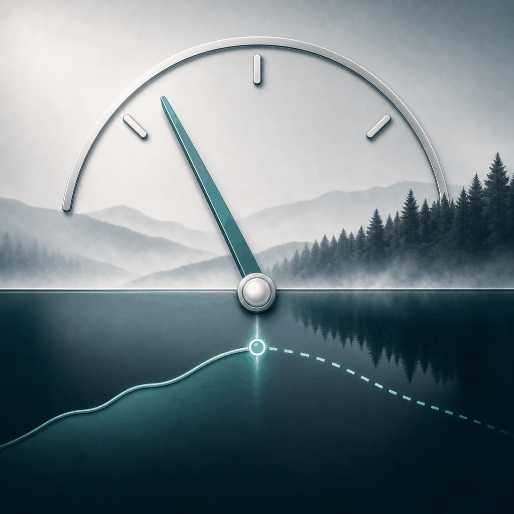
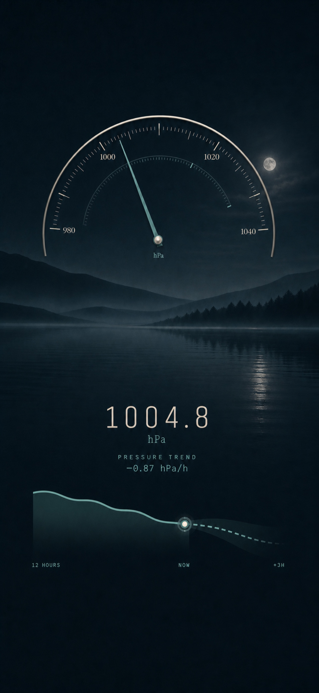
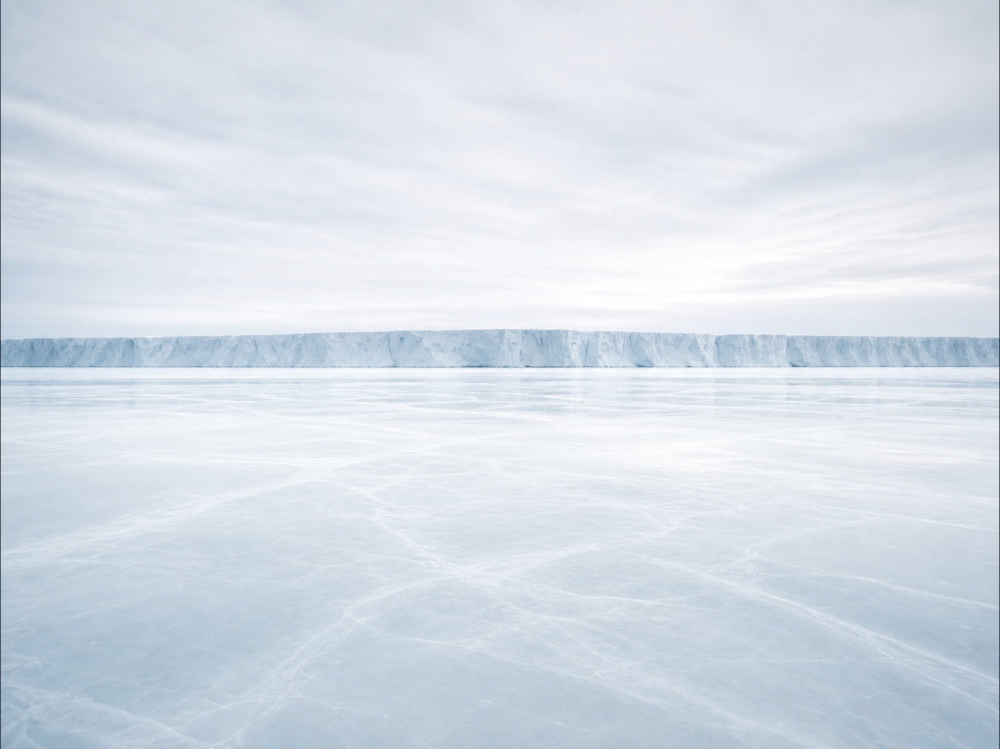
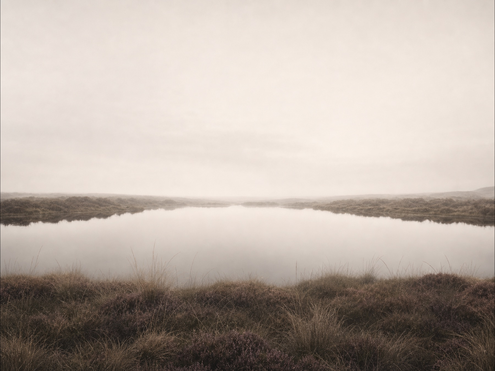
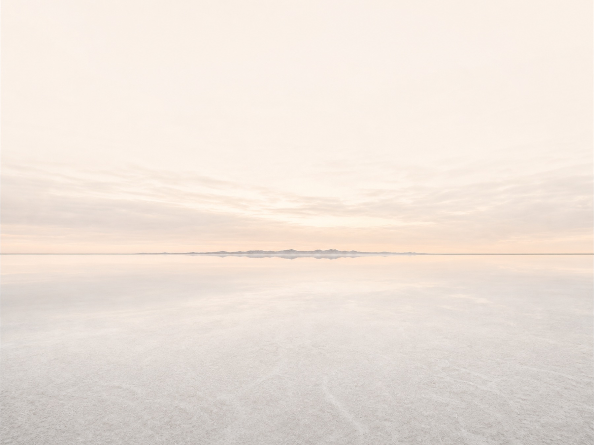

01 The original atmosphere · Still
Quiet Horizon
A mist-softened Finnish lake where the mountains settle into their own reflection. Familiar, balanced and deeply calm—a place for noticing change without being hurried by it.

OverbaroYour atmosphere, made visible
Overbaro listens to the barometer already inside your iPhone. It remembers how pressure has moved and measures how quickly it's changing — the same signal sailors and meteorologists have trusted for centuries — turning that into a calm, short-term local outlook.
The reading, alive
A number alone is only a moment. Overbaro keeps the shape of the hours behind it—so you can see whether the atmosphere is holding steady, quietly improving or gathering momentum toward a change.

A local outlook
A falling barometer has signaled an approaching change for as long as sailors have carried one — the faster the fall, the sooner and stronger that change tends to arrive. Overbaro combines current pressure with its recent rate of change: the solid line is what your phone observed, the dashed line is where that momentum points next—a nearby tendency, never false certainty.
Designed for a glance
The same quiet hierarchy adapts to light and dark appearance. The current reading stays unmistakable; the instrument, trend and local landscape recede into atmosphere around it.

The instrument is there when you want detail.
The atmosphere is there when you simply want to feel what is changing.
Five atmospheres
Overbaro’s landscapes are not decoration added around the instrument. Each gives the same precise reading a different kind of quiet—from a familiar Finnish lake to the wide abstraction of a salt horizon.
The pressure reading remains stubbornly scientific.
01 The original atmosphere · Still
A mist-softened Finnish lake where the mountains settle into their own reflection. Familiar, balanced and deeply calm—a place for noticing change without being hurried by it.
02 Clear
Weathered stone islands resting in pale northern water. Cool light, open air and just enough distance to make every reading feel crisp.

03 Focused
Ancient ice meeting luminous water beneath a wide sky. Clean and precise without becoming clinical; the atmosphere, pared back to its essentials.

04 Grounded
A secluded moorland pool held by muted heather and drifting haze. Softer, warmer and quietly reflective—for days when the weather feels better read slowly.

05 Open
A near-endless horizon reduced to light, distance and stillness. Almost otherworldly, yet perfectly suited to one very earthly pressure reading.
Measured here
Overbaro reads on-device barometric pressure instead of presenting a distant station as your immediate surroundings.
Honest by design
Atmospheric pressure reveals useful momentum. Overbaro presents it as a nearby outlook—not a clock-precise weather forecast.
Beautifully quiet
No crowded weather dashboard. The details that matter are given room to breathe, day and night.
Private by nature
No account, advertising or analytics. Your pressure history is held on your device and used to create your local trend.
Read the privacy policy →Available for iPhone
A premium digital barometer and short-term local outlook. One thoughtful purchase, with no subscriptions or advertising.